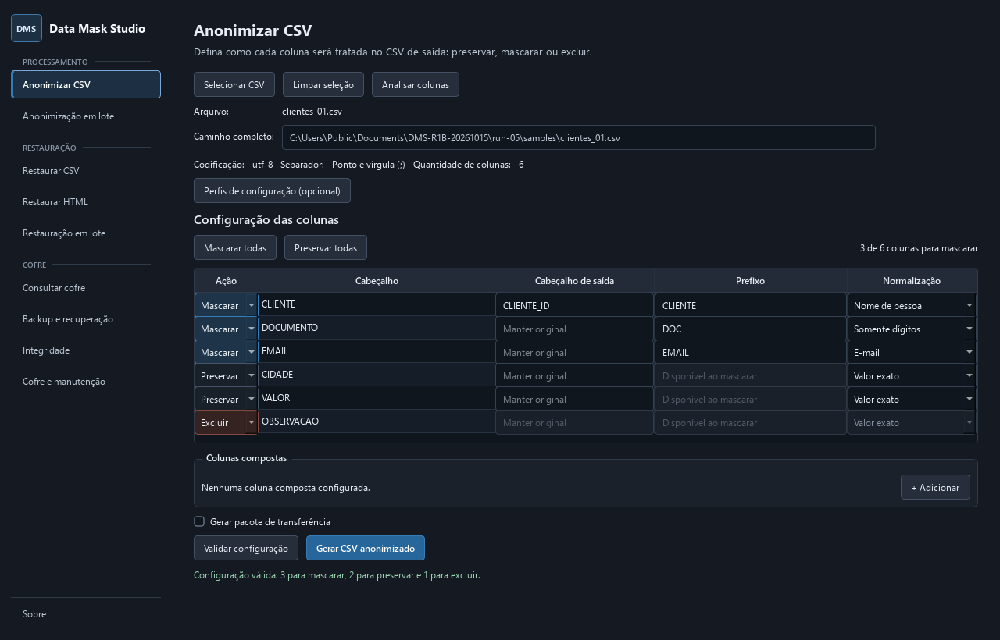
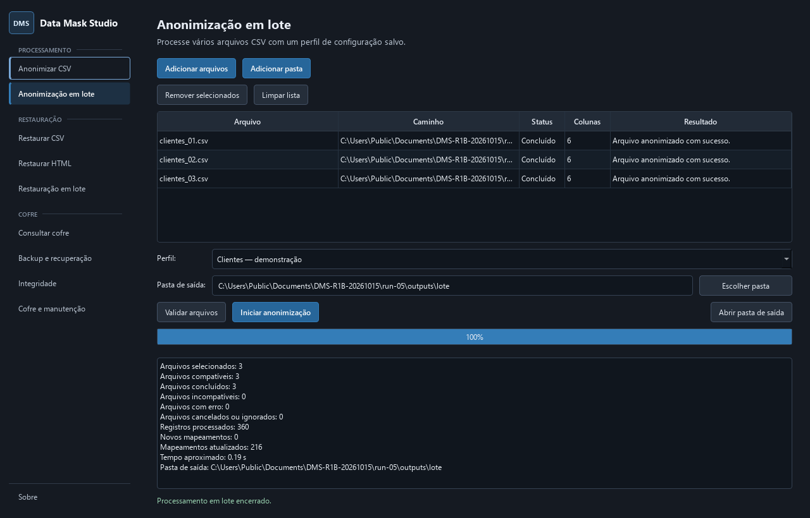
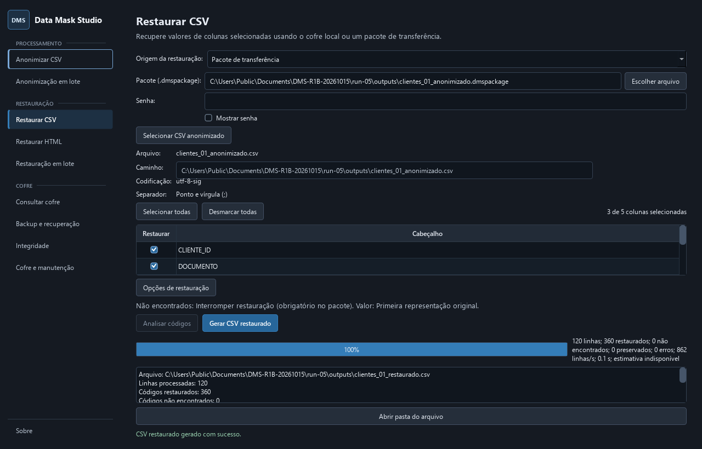

Prepare cada coluna
Preserve, mascare ou exclua colunas. Configure normalizações, cabeçalhos de saída e colunas compostas antes de gerar o CSV.
Open source · Windows · Processamento local
Preparação e mascaramento local de dados para Windows, em código aberto.
Prepare dados úteis sem enviar conteúdo sensível para fora do computador. Mantenha correlações analíticas e escolha o que preservar, mascarar ou excluir.

O que é o DMS?
O Data Mask Studio é uma aplicação desktop local-first para Windows de preparação, tratamento e anonimização de dados. O mascaramento determinístico mantém valores repetidos correlacionados durante análises, com restauração controlada de dados CSV e códigos em HTML local.
A restauração é controlada por mapeamentos de recuperação, não por um token individualmente reversível. Use o cofre local ou um pacote seletivo criptografado junto ao CSV correspondente.
Principais recursos
Prepare, mascare, restaure e verifique conjuntos de dados sem enviar seu conteúdo para um serviço externo.
Preserve, mascare ou exclua colunas. Configure normalizações, cabeçalhos de saída e colunas compostas antes de gerar o CSV.
Processe um CSV ou reutilize perfis salvos em um lote. O mascaramento determinístico preserva correlações entre valores repetidos.
O DMS 1.3.0 suporta arquivos .dmspackage protegidos por senha contendo apenas os mapeamentos de restauração do CSV vinculado.
Restaure colunas selecionadas de CSV ou códigos conhecidos em HTML local. A restauração por pacote atende CSVs individuais.
Arquivos .dmsbackup protegidos por senha levam cofre, chaves e perfis salvos para recuperação do ambiente.
Inspecione o cofre, execute verificações de integridade e diagnóstico e gerencie temporários e compactação localmente.
Três necessidades de recuperação
Escolha a fonte de recuperação conscientemente. Esses arquivos têm finalidades diferentes e não são intercambiáveis.
Restauração local
Restaure usando o cofre local correspondente e suas chaves originais protegidas pelo Windows DPAPI. Os fluxos de CSV e HTML permanecem locais.
Transferência seletiva · DMS 1.3.0
.dmspackageO destinatário precisa do CSV mascarado correspondente sem alterações, do pacote, da senha e de uma versão do DMS que suporte o formato. Não precisa do cofre nem das chaves DPAPI do remetente.
Apenas CSVs individuais. Mapeamentos ausentes interrompem a restauração; não há fallback para o cofre local.
Recuperação do ambiente
.dmsbackupRecupere cofre, chaves e perfis salvos com a senha do backup. Isso substitui o ambiente local; não é restauração seletiva de CSV e não inclui arquivos CSV ou HTML.
Pacotes e backups contêm dados sensíveis de recuperação. Mantenha suas senhas separadas. Consulte os requisitos e limites no guia de compatibilidade e recuperação.
Por dentro da aplicação
Telas do DMS 1.3.0 em português, capturadas com dados sintéticos isolados. Abra qualquer captura para ver os detalhes na resolução original.
Três CSVs sintéticos processados com sucesso, com resultados por arquivo e resumo final.

O fluxo real de pacote restaurou 120 linhas sintéticas. O campo de senha é limpo após o processamento.

Como funciona
O mesmo valor efetivo, prefixo e ambiente criptográfico geram identificadores consistentes entre registros e arquivos. Restaure pelo cofre local correspondente ou por um pacote seletivo vinculado aos bytes exatos do CSV mascarado.
Segurança e privacidade
O DMS oferece mascaramento determinístico com restauração controlada por meio de um cofre local criptografado. Ele não afirma que tokens individuais sejam reversíveis ou garantam anonimização irreversível.
Os tokens derivam de autenticação criptográfica com chave, incorporando o prefixo configurado e o valor original.
Protege os valores originais no cofre. Pacotes e backups usam chaves de criptografia separadas, derivadas de senha.
As chaves locais são protegidas para o usuário do Windows. O processamento é local, sem telemetria ou sincronização automática de dados sensíveis.
Sem telemetria ou envio automático de arquivos. O DMS é voltado ao Windows e não garante segurança absoluta. As distribuições ainda não possuem assinatura digital.
Código aberto
SPDX: GPL-3.0-only. Componentes de terceiros permanecem sob suas respectivas licenças.
Autor